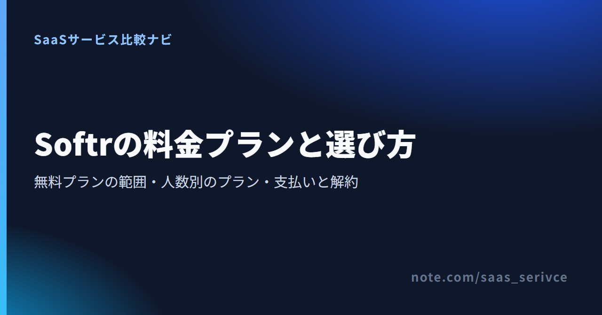
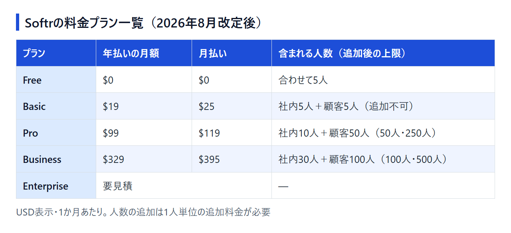

Softrで社内ツールや顧客ポータルを作ろうと料金を調べると、「Professional」プランや月$49といった数字の並ぶ解説がよく見つかります。ところがSoftrは2026年8月5日に料金体系を改め、プラン名も利用者の数え方も変わりました。改定前の数字で見積もると、実際の請求額とずれます。
改定後の料金で見直すと、決めることは3つに絞れます。無料プランで足りるか、有料なら社内と顧客の人数でどのプランにするか、そして日本からカードで契約・解約できるかです。
Softrは無料プランで作り始め、アプリを使う人の数と必要な機能がそろった時点で有料プランを選ぶのが基本です。 Freeは利用者5人・データ5,000件まで$0で使え、有料プランの機能は別に用意された無料トライアルで試せます。
有料プランの人数は2つに分けて数えます。作る人と同じ会社ドメインのメールで使う「team users」（この記事では社内の利用者と呼びます）と、それ以外の「client users」（顧客の利用者）です。Gmailなどのフリーメールで登録した人は、社員でも client users に数えられます。
公式の料金ページは英語のみで、金額はドル建てです。ProとBusinessに書かれた人数は料金に含まれる分で、1人単位の追加料金を払えば上の上限まで増やせます。
改定後のプランはFree・Basic・Pro・Business・Enterpriseの5つです。有料プランはどれも月払いと年払いを選べ、年払いのほうが月あたりの料金は安くなります。

1ドル=157円換算（執筆時点の目安。為替で変動）で、年払いの月額はBasicが約2,983円、Proが約15,543円、Businessが約51,653円です。請求はドル建てなので、円での引き落とし額はカード会社の換算レートで決まります。
非営利団体と教育機関は、申請すると50%の割引を受けられます。
1年間の支払額で比べると、月払いと年払いの差は次のとおりです。
割引率がいちばん大きいのはBasicです。全額返金を受けられる期間も、月払いが初回支払いから14日なのに対し、年払いは30日と長めです。
2026年8月5日の改定で、次の点が変わりました。改定前に書かれた解説のプラン名や金額は、いまの請求額と一致しません。
改定前から有料プランを契約している人は、旧プランのまま続けられます。手元の請求額がこの記事の金額と違う場合は、旧プランの料金が続いていると考えられます。
これから契約する人が選べるのは改定後の5プランだけです。「ユーザー数◯人まで」とだけ書かれた料金表を見かけたら、改定前の数え方だと考えてください。
Freeは$0で使い続けるプランで、有料プランの機能はそれとは別の無料トライアルで試せます。 2つを混同しないようにしましょう。
作る人は3人まで置ける一方、アプリを使えるのは社内と顧客を合わせて5人までです。作る人をアプリの利用者に加えても、この5人の枠は減りません。小さなチームで共同編集しながら試作する段階なら、この範囲に収まります。
カードを登録しなければ、トライアルは7日間で終わるだけです。カードを登録して14日間に延ばしたときは、終了日をカレンダーに入れておき、続けない場合は終了前に解約してください。
データ件数の上限は、Softrのデータベースに保存するデータに対するものです。Airtableやスプレッドシートなど外部のデータソースにつないで使う場合は、そちらのサービスの料金も別にかかります。
使う人が6人以上になりそうなとき、顧客向けの利用者枠を社内とは別に確保したいとき、独自ドメインで公開したいときが、有料プランへ移るタイミングです。
有料プランは、社内と顧客の人数がどちらも収まるプランを選びます。 Basicは人数を増やせませんが、ProとBusinessは1人単位の追加料金を払えば、各プランの上限まで増やせます。
追加した人数分は、年払いの契約でも毎月請求されます。含まれる人数を超えてから7日間の猶予があり、その後に日割りで加算される仕組みです。基本料金を年1回払っていても、追加分の請求は毎月届く前提で経理処理を決めておきましょう。
Softrのプランの上限は、次の4つの数え方で決まっています。
team users は、ワークスペースの作る人のだれかと同じ会社ドメインのメールで使う人です。それ以外はすべて client users になります。社員でもGmailで登録していれば client users で、逆に外注先の人が自社ドメインのアドレスを使っていれば team users に数えられます。
人数以外の上限と、作る人を追加する料金は次のとおりです。
ワークフローは月の上限に達すると、回数がリセットされるか上位プランに上げるまで止まります。データ件数やワークフローの回数が足りなくなる場合は、人数に余裕があっても上位プランへの切り替えを考えることになります。
ここでの「社内」は、作る人と同じ会社ドメインのメールで使う人を指します。Gmailで運用している小さなチームは、社員も顧客の枠（client users）に数えられるので、次の「顧客にもログインしてもらう場合」の人数で考えてください。
社内だけで5人以内なら、FreeとBasicの人数枠は変わりません。Basicに上げて増えるのはデータ件数（5,000件→5万件）、ワークフロー（月500回→月2,500回）、独自ドメインで、作る人は逆にFreeの3人から1人に減ります。3人で共同編集してきたチームがBasicで同じ体制を保つには、作る人2人分の追加で月$10〜$12かかります。
社内が10人を超えても、すぐにBusinessへ上げる必要はありません。たとえば社内20人なら、Proに10人を足して月$129（年払いの基本料金$99＋追加$30）で、Businessの年払い月$329より安く収まります。
実際には社内と顧客の人数を組み合わせて判断します。
Proの上限いっぱい（社内50人・顧客250人）まで追加しても月$419で、同じ人数をBusinessで賄うと月$729です（どちらも年払いの基本料金で計算）。人数だけを理由にBusinessを選ぶ場面はほとんどありません。Businessに上げるのは、Proの上限を超えるとき、または社内規程で2FAが必須、データが50万件を超えるといった機能面の理由があるときです。
Basic・Pro・Businessの支払いはクレジットカードのみで、請求はドル建てです。 請求書払いを選べるのはEnterpriseに限られます。
振込でしか支払えない会社は、Enterprise以外のプランを契約できません。法人カードを用意するか、立て替えを経費精算で処理するかを先に決めておきます。
請求書に会社名やVAT番号をどう載せるか、日本の適格請求書（登録番号）の要件を満たすかは、公開されている情報からは分かりません。経理で必要な項目が載っているかは最初の請求書で確かめ、足りなければ返金期間のうちに続けるかどうかを決められます。
海外SaaSの利用料にかかる日本の消費税の扱い（リバースチャージの対象になるかなど）は、自社の状況によって判断が分かれるため、税理士に確認してください。
無料プランで比べると、Softrはアプリ数が無制限で、作る人も3人まで置けます。GlideとBubbleの無料プランは編集者が1人で、どちらもアプリを公開できません。 ただし独自ドメインを使えるのは、Softrも有料のBasicからです。有料の最安プランは、年払いでGlideがSoftrのBasicと同じ$19/月、Bubbleは$59/月からです。
最安値が同じでも、料金が何によって増えるかは3つのツールで異なります。
顧客や会員が大勢ログインするポータルなら、顧客1人あたり月$1で枠を足せるSoftrのProが候補になります。処理の重さを自分で見積もれる開発寄りのアプリなら、Bubbleの課金の仕組みのほうが実態に合います。
Glideの無料プランでできるのはビルダーの中で作ってテストするところまでで、アプリの公開には有料プランが要ります。料金体系は2つあり、ここで挙げたノーコードアプリの「Glide Classic」と、別製品の「GlideOS」とで金額が異なります。返金は初回購入から14日以内なら申請でき、Softrの月払いと同じ期間です。
Glideの公式サイトの料金ページはGlideOSの料金を案内しているので、Glide Classicの金額と取り違えないよう注意してください。
Bubbleの料金には、サーバーの負荷を表すworkload unitsで決まる従量の要素があります。プランの枠を超えた分は従量課金か追加枠の購入で補いますが、超過を止めてプランの枠内に収める設定もできます。支払いはJCBを含むカードに対応していますが、支払い済みの料金は返金されません。Softrには初回支払いから月払い14日・年払い30日の返金期間があるので、試してから決めたい人にとってはSoftrの条件のほうが緩やかです。なおBubbleのStarterには14日間の無料トライアルがあり、終了前に解約しないと自動で有料に切り替わります。
Bubbleには、ここで挙げたWeb & Mobileのプランのほかに、Web単体・モバイル単体のプランもあります。
有料プランはいつでも自分で解約でき、初回支払いから月払いは14日以内、年払いは30日以内なら全額返金を受けられます。
請求期間の途中で解約しても、残りの日数は有料プランのまま使えます。Freeに戻ると上限は利用者5人・データ5,000件になるので、解約する前に、人数とデータ件数がこの範囲に収まるかを見ておきましょう。
返金期間の起点は初回の支払いです。更新のたびに同じ期間があるとは考えず、自動更新の前に続けるかどうかを決めてください。サポートは英語のみなので、申請のメールも英語で書きます。
Softrそのものの利用をやめるときは、契約を終える前に、必要なデータを元のデータソースや手元のファイルに残しておいてください。
Freeとトライアルで試し、続けると決めてから年払いにすれば、初回の支払いから30日以内は全額返金の対象になります。
ヘルプとサポートは英語で、管理画面の表示言語を切り替える設定も案内されていません。作ったアプリ側にも言語の設定はなく、日付や曜日を利用者の言語で表示する設定があるだけです。アプリの文言を多言語にしたい場合、公式は外部サービスのWeglotとの連携を案内しています。
「Plan and billing」から変更できます。下位プランへの変更は次回の更新日から反映され、追加した利用者を減らしても期間中の返金はありません。Basicは利用者を追加できないため、ProからBasicへ下げる前に、社内・顧客ともに5人以内に収まっているかを確かめてください。
Softrは無料プランで作り始め、社内と顧客の人数がどちらも収まり、必要な機能がそろうプランを選びます。
アプリを使う予定の人を書き出し、会社ドメインのメールかどうかで社内と顧客に分けて数えてから料金ページを見ると、選ぶプランは1つに絞れます。